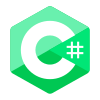

About Me
Hi! I'm Ryan Tarnowski a software developer with 10+ years of experience. I work for the largest Caterpillar dealer in Canada, helping the remanufacturing side of the business increase production velocity and user productivity by delivering custom software solutions tailored to their unique needs.
My primary technology experience is within the Microsoft stack (vb.net, c#, asp.net, MS SQL).
However, I am currently re-tooling my skill sets to include a broader range of technologies through a Full-Stack Engineer course provided by Codecademy.
My goal is to continue learning and implementing new technologies as often as a can.
My rough road map of learning includes:
- Full-Stack Engineer course (Codecademy)
- Data Structures and Algorithms (Neetcode)
- Coding Challenges (Codecrafters)
In my free time I enjoy learning about computer hardware, low level programing and other mechanical/engineering concepts. I have my own home lab where I setup virtual environment and experiment with containers, server management and some networking. I also enjoy playing video games, reading and playing hockey.
Projects
- Portfolio Website
- Yoda's Message
- KVM utility app
Portfolio website to keep track of my development.
Portfolio Website CodeA simple html website that utilizes JavaScript to generate a random message from Yoda.
Yoda's Message CodeKVM utility app that changes monitor inputs and switches usb connections between computers.
KVM Utility CodeSkills



Contact